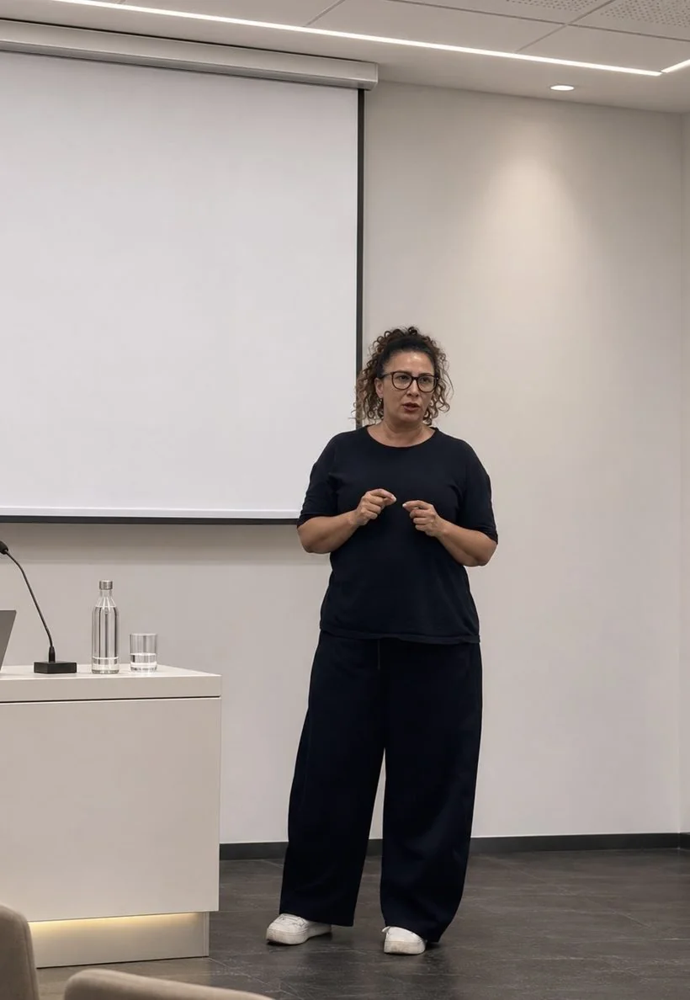
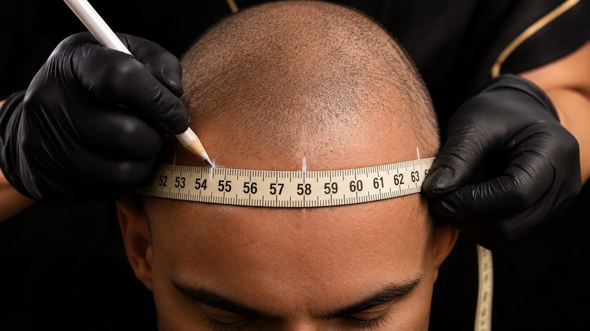

Chi sono

Lavoro a Roma (Flaminio) e mi occupo di tricopigmentazione del cuoio capelluto e di dermopigmentazione del viso. Sono la fondatrice di AUREALE, il progetto in cui unisco il mio metodo di lavoro.
Tricopigmentazione: effetto rasato, effetto densità e infoltimento, camuffamento delle cicatrici da trapianto e trattamenti per la donna.
Dermopigmentazione del viso: sopracciglia, labbra e occhi.
I lavori eseguiti si vedono nella pagina Prima e dopo; le risposte alle domande più frequenti sono nelle FAQ.
Studio tatuaggio e dermopigmentazione dal 2008. Mi sono specializzata in tricopigmentazione e mantengo un aggiornamento costante con corsi di perfezionamento.
Sono abilitata dalla Regione Lazio come Operatore delle attività di tatuaggio, qualifica che comprende tricopigmentazione, dermopigmentazione e tatuaggio artistico.
Standard del percorso formativo: Regione Lazio, DGR 270/2022.
L’eccellenza nasce dalla capacità di osservazione.

Sono docente di tricopigmentazione presso MB Accademia, accreditata dalla Regione Lazio, nel corso abilitante di Operatore delle attività di tatuaggio. Il mio modulo ha la durata minima prevista dallo standard regionale, 80 ore (circa dieci giornate da otto ore), e unisce teoria, progettazione ed esercitazioni tecniche. Insegno a osservare, progettare e controllare la tecnica.

Il corso comprende anche anatomia e fisiologia cutanea, sicurezza delle miscele e prevenzione delle complicanze, primo soccorso, igiene e sicurezza sul lavoro, comunicazione con il cliente, privacy, diritto, gestione d’impresa e inglese di settore, come indicato nello standard formativo della Regione Lazio. Date, costi e iscrizioni sono nella pagina Corsi di formazione; il profilo dei docenti è sul sito di MB Accademia.
È il protocollo di tricopigmentazione che ho ideato. Ogni trattamento è costruito sulla persona, con l’obiettivo di un risultato vicino alla sua fisionomia e al suo schema naturale di crescita dei capelli. Proporzioni, colore del pigmento e distanza tra i punti sono definiti caso per caso, in base alla densità e al colore dei capelli presenti, e concordati in consulenza.
Il risultato è un effetto ottico: non è un trapianto e non fa crescere capelli. Lo dico fin dal primo incontro, perché le aspettative devono essere realistiche.

Scrivo articoli di divulgazione su tricopigmentazione, dermopigmentazione, igiene e normative, con riferimenti a fonti ufficiali e scientifiche. Sono raccolti nella sezione Approfondimenti.
Per cominciare: